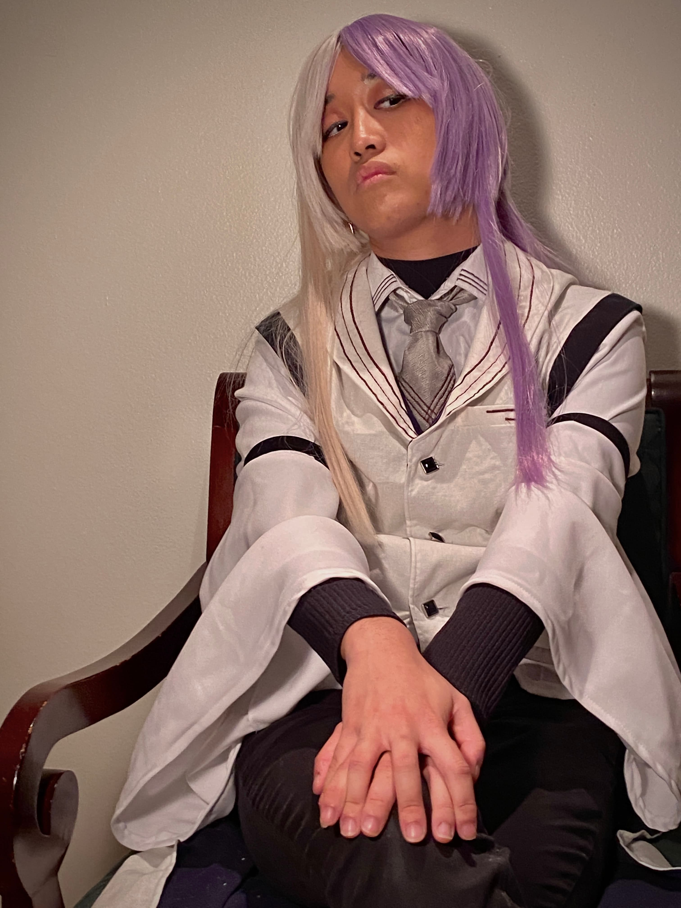

About Me!
Hello! I am a 22-year-old Filipino cosplayer residing in Orlando, Florida. I have been cosplaying and making my own costumes since I was in middle school, but I have only become somewhat skilled in the craft within the past couple of years. I like sewing my own cosplays from scratch and just started drafting my own patterns, but I also indulge in pre-made cosplays by companies such as Doki Doki and Holoun!
Besides cosplay, I also enjoy digital art and animation. I also sell my artwork at conventions throughout Florida such as MegaCon Orlando, Holiday Matsuri, WasabiCon, and Brick City Anime Festival. If you're ever at any of my upcoming events, feel free to come by my booth to say hello!
Past Cosplays
These are cosplays that I have completed recently. You might see me wearing them at cons!
- Chifuyu Matsuno (Tokyo Revengers)
- Fukase (VOCALOID)
- Kaito (VOCALOID, "Madness of Duke Venomania" version by Mothy-P)
- Bram Stoker (Bungo Stray Dogs)
- Hajime Kokonoi (Tokyo Revengers)
- Ryuunosuke Akutagawa (Bungo Stray Dogs, BEAST version)
- Osamu Dazai (Bungo Stray Dogs, 15 version)
- Sigma (Bungo Stray Dogs) 
Cosplans
I am currently working on these cosplays or am planning to work on them in the future!
- Jiaoqiu (Honkai: Star Rail)
- Dan Heng (Honkai: Star Rail, Imbibitor Lunae version)
- Utatane Piko (VOCALOID)

Upcoming Events
These are conventions that I am planning to attend, either as an attendee in cosplay or as a vendor in the Artist Alley!
- Hizashicon (Pensacola, FL) - October 31-November 1, 2025
- Holiday Matsuri (Orlando, FL) - December 19-21, 2025
- Brick City Anime Festival (Ocala, FL) - January 10-11, 2026
- Collective Con (Jacksonville, FL) - March 27-29, 2026
Social Media
Feel free to connect with me on social media to keep up with my upcoming conventions and my cosplay-making progress!